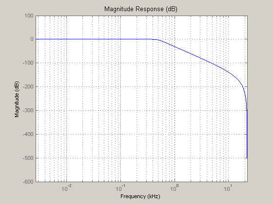
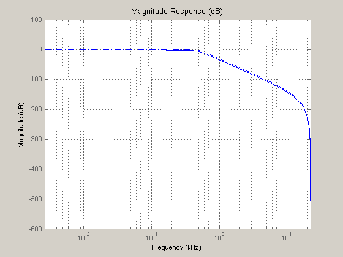
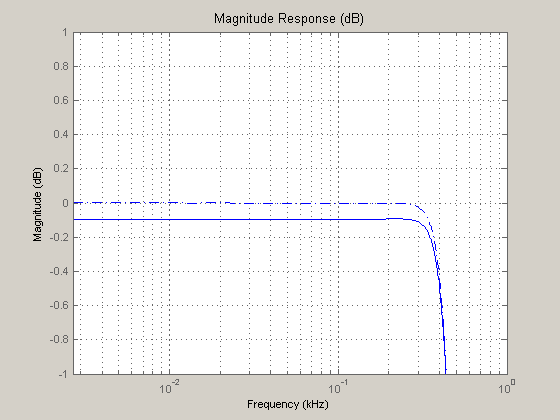
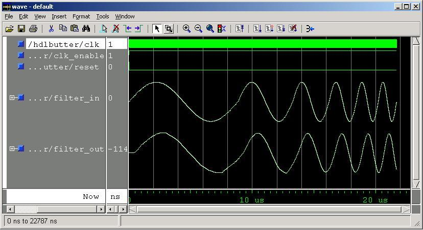
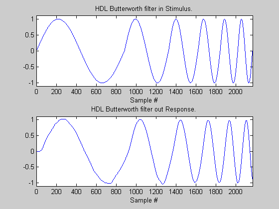

This demonstration illustrates how to generate HDL code for a 5th order Butterworth filter. The cutoff-frequency for this filter is very low relative to the sample rate, leading to a filter that is difficult to make practical. Also, small input (8-bit) and output (9-bit) word sizes cause the quantized filter to require scaling to be realizable.
Use the CD sampling rate of 44.1 kHz and a cut-off frequency of 500 Hz. First, create the filter design object, then create the double-precision filter. Convert it from the default structure (DF2SOS) to the desired structure, DF1SOS. Finally, examine the response in log frequency using fvtool.
Fs = 44100; Fn = Fs/2; Fco = 500; filtdes = fdesign.lowpass('n,fc', 5, Fco, Fs); Hd = butter(filtdes); Hd = convert(Hd, 'df1sos'); fvtool(Hd, 'Fs', Fs, 'FrequencyScale', 'log');
Set the filter object to fixed-point mode to quantize it. Assume 8-bit fixed-point input and output data with 12-bit coefficents and 20-bit adders and states. Check the response with fvtool.
Hd.arithmetic = 'fixed'; Hd.InputWordLength = 8; Hd.InputFracLength = 7; Hd.OutputWordLength = 9; Hd.OutputMode = 'SpecifyPrecision'; Hd.OutputFracLength = 7; Hd.CoeffWordLength = 12; Hd.AccumWordLength = 20; Hd.NumStateWordLength = 20; Hd.DenStateWordLength = 20; Hd.CastBeforeSum = false; Hd.RoundMode = 'round'; Hd.OverflowMode = 'wrap'; fvtool(Hd, 'Fs', Fs, 'FrequencyScale', 'log');
In the plot above, fvtool shows that the quantized passband is approximately 2 dB lower than the desired response. Adjust the coefficient word length from 12 to 16 to get the quantized response closer to the reference double-precision response and zoom in on the passband response. The quantized filter is now just over 0.1 dB lower than the reference filter.
Hd.CoeffWordLength = 16; fvtool(Hd, 'Fs', Fs, 'FrequencyScale', 'log'); axis([0 1.0 -1 1]);
A key step for hardware realization of the filter design is to check whether the scale values are reasonable and adjust the scale value if needed. First, examine the quantized scale values relative to the input specification--an 8-bit value with fraction length of 7 bits. Since the first two scale values are smaller than the input settings, most of the input values are quantized away. To correct this, the filter needs to be scaled.
scales = Hd.scalevalues .* 2^Hd.InputFracLength % Now scale the filter using the frequency domain infinity norm. scale(Hd,'Linf'); % After scaling, the scale value are all one in this case. scales = Hd.scalevalues
scales =
0.1563
0.1563
4.4063
128.0000
scales =
1
1
1
1
Starting with the correctly quantized filter, VHDL or Verilog code. You have the option of generating a VHDL, Verilog, or ModelSim .do file test bench to verify that the HDL design matches the MATLAB filter.
Create a temporary work directory. Generate VHDL code for the filter and open the generated file in the editor.
To generate Verilog instead, change the value of the property 'TargetLanguage', from 'VHDL' to 'Verilog'.
workingdir = tempname; generatehdl(Hd,'Name', 'hdlbutter', 'TargetLanguage', 'VHDL',... 'TargetDirectory', workingdir); edit(fullfile(workingdir, 'hdlbutter.vhd'));
### Starting VHDL code generation process for filter: hdlbutter ### Generating hdlbutter.vhd file in: C:\Temp\tp014717 ### Starting generation of hdlbutter VHDL entity ### Starting generation of hdlbutter VHDL architecture ### First-order section, # 1 ### Second-order section, # 2 ### Second-order section, # 3 ### HDL latency is 2 samples ### Successful completion of VHDL code generation process for filter: hdlbutter
Since the passband of this filter is so low relative to the sampling rate, a custom input stimulus is a better way to test the filter implementation. Build the test input with one cycle of each of 50 to 300 Hz in 50 Hz steps.
Generate a ModelSim .do file test bench to verify that the results match the MATLAB results exactly.
After generating the test bench, open the generated file in the editor.
userstim = []; for n = [50, 100, 150, 200, 250, 300] userstim = [ userstim, sin(2*pi*n/Fs*(0:Fs/n))]; end generatetb(Hd, 'ModelSim', 'TestBenchName', 'hdlbutter_tb',... 'TestBenchStimulus', [],... 'TestBenchUserStimulus', userstim,... 'TargetDirectory', workingdir); edit(fullfile(workingdir, 'hdlbutter_tb.do'));
### Starting generation of ModelSim .do file Test Bench ### Generating input stimulus ### Done generating input stimulus; length 2166 samples. ### Generating ModelSim .do file hdlbutter_tb in: C:\Temp\tp014717 ### Done generating ModelSim .do file test bench.
The following display shows the ModelSim HDL simulator after running the .do file test bench. Compare the ModelSim result with the MATLAB result below.

xrange = (0:length(userstim) - 1); y = filter(Hd, userstim); subplot(2,1,1); plot(xrange, userstim); axis([0 length(userstim) -1.1 1.1]); title('HDL Butterworth filter in Stimulus.'); xlabel('Sample #'); subplot(2,1,2); plot(xrange, y); axis([0 length(userstim) -1.1 1.1]); title('HDL Butterworth filter out Response.'); xlabel('Sample #');
You designed a double-precision Butterworth filter to meet the given specification. You then quantized the filter and discoverd problems. Requantizing the coefficients and scaling the filter corrected these problems. You then generated VHDL filter code and a ModelSim .do file test bench.
You can use the ModelSim HDL Simulator, to verify these results. You can also experiment with VHDL and Verilog for both filters and test benches.